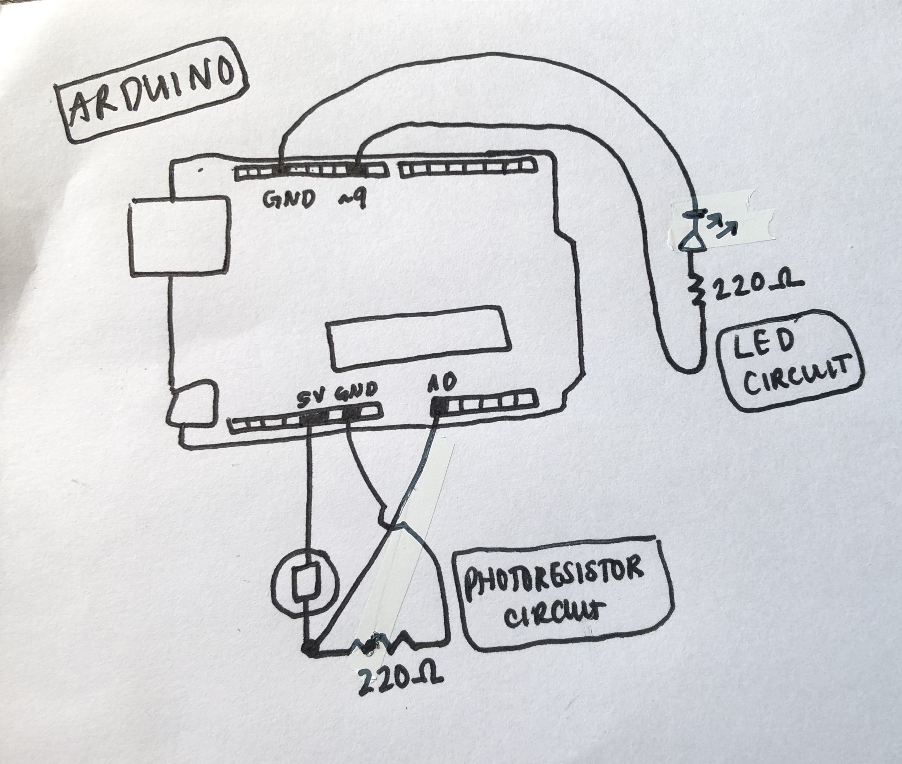
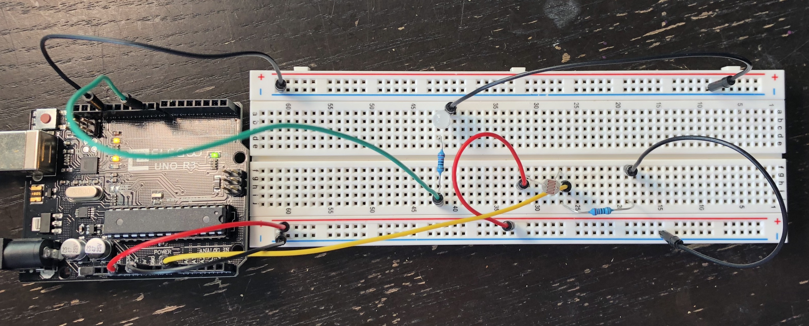

Alison's Assignment 3!
Here is all the documentation for assignment 3!
Schematic

This is my schematic! I chose to use a 220 ohm resistor for the LED because even though according to my calculations (5-3.3 = 20(10^-3)*R, R=85), you're supposed to use a 100 ohm resistor, I used 220 because I find the LED really harsh to look at with 100. I also used a 220ohm resistor with the photoresistor in order to create a voltage divider. Voltage dividers takes in higher voltages and produces lower voltages, so we can expect the product of the voltage divider to be a fraction of the input.
Code
This is my code. It works by constantly checking the photoresistor to see what the level of light in the environment is. If it's low enough, it turns on the LED. If the room brightens, then the LED turns off.
Circuit

This is a picture of my circuit!

And finally, here's a gif of my circuit's operation. I use my hand to cover the photoresistor to simulate darkness, because I couldn't hold the camera and also get up and turn the lights on and off. I couldn't have done this assignment without the help of TJ and Gina in class and this tutorial on using photoresistors.